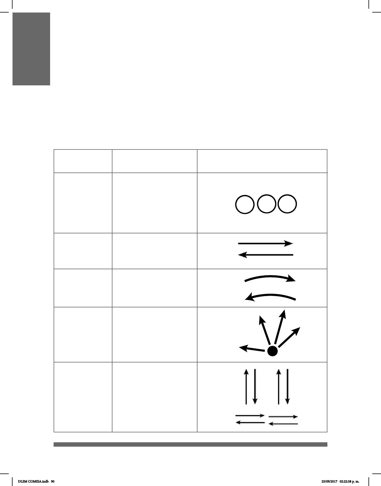

90
EXPLICACIÓN DE
LOS MOVIMIENTOS Y SUS SÍMBOLOS
MOVIMIENTO
DESCRIPCIÓN DEL
MOVIMIENTO
IMAGEN
Se utilizan los números
consecutivos para marcar el
orden en que cambian las
conguraciones manuales
junto con el movimiento en
las señas compuestas.
Lineal (lin)
Arco (ar)
Extensión de
dedos (E)
Vaivén (va)
Recto.
El brazo, la mano o la
muñeca se mueven
formando un arco.
Los dedos
se extienden.
Las manos o los brazos
se mueve
alternadamente.
Una vez especicadas las posibles direcciones de las conguraciones manuales, se
presenta a continuación una tabla con todos los movimientos que las manos pueden
realizar en la LSM. En la primera columna se menciona el nombre del movimiento; en
la segunda, la descripción del mismo, y en la tercera aparecen echas o imágenes de
la mano para indicar la dirección o la manera en que las conguraciones manuales se
mueven.
DLSM COMISA.indb 90 25/09/2017 02:22:38 p. m.